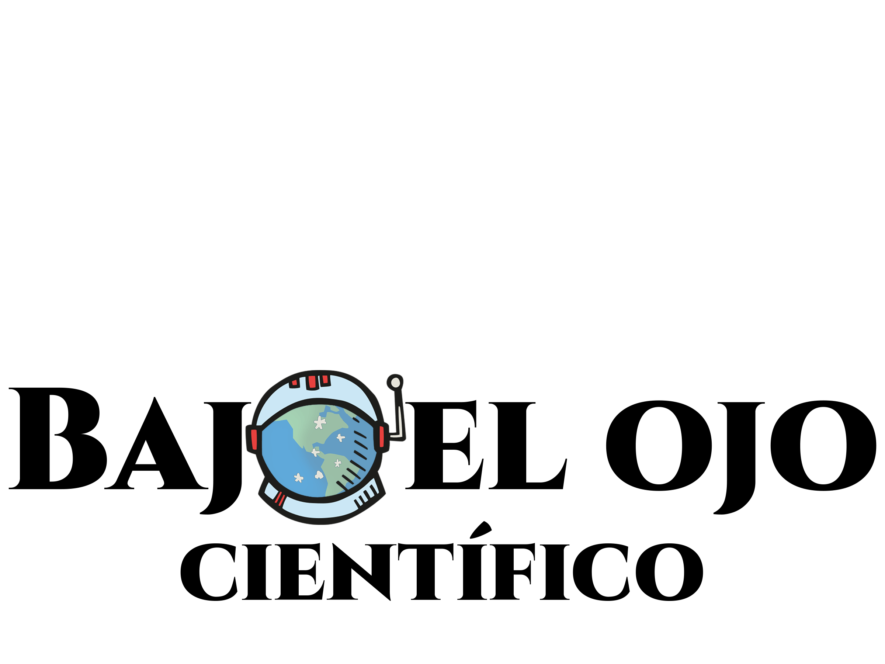
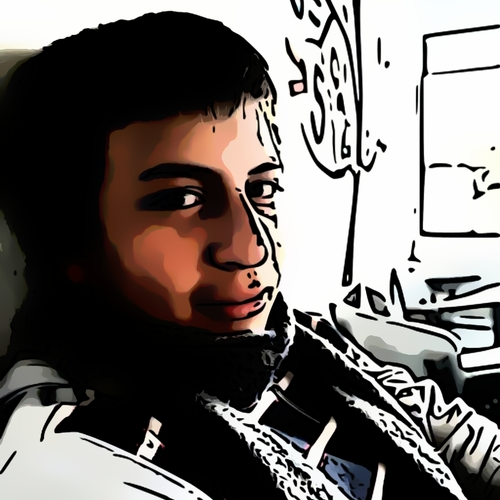

Quyca Fa: Bajo el ojo científico
Inicio
Secciones
Ultimo articulo

Articulos
EL PLANETA QUE SOLO PUDO SER DESCUBIERTO GRACIAS A LAS MATEMATICAS, NEPTUNO
LA ÓPTICA, GRAN SALVADORA EN TIEMPOS DE CUARENTENA
El misterio del chickxulub
Ver más
Actualmente no hay más contenido

Juan David Guevara Arévalo
Editor Bajo el ojo científico y desarrollador del sitio web.
 Quyca Fa: Bajo el ojo científico
Quyca Fa: Bajo el ojo científico